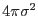
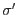
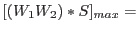
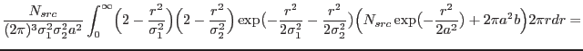
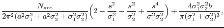
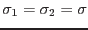

Countrates are estimated using a countrate image. This countrate image consists of the input image divided by the exposure map. Both the input image and the countrate image are convolved with the Mexican Hat wavelet. If a maximum is found in the convolved input image, a corresponding maximum in the convolved countrate image will be searched for. Multiplying this maximum correlation with  gives an estimate for the source countrate.
In a separate routine the best correlation for a given source for all different wavelet scales will be compared and the most appropriate wavelet scale will be used, in order to obtain the source countrate. In fact, we can do a little better than that: correlation values at two different scales can be used to infer a better estimate for the scale at which the correlation peaks. From eq. (5) it can be derived that the best estimate for the scale, , at which the wavelet correlation peaks is:
Note that this algorithm is more like described by Damiani et al. ([2]), than the algorithm in the Chandra wavelet code.
To estimate the error in the number of counts we have to calculate the
variance, and for the error in eq. (6) also the covariance,
related to eq. (5).
We assume here that the image to be analysed is a
photon count image, i.e. the errors per pixel follow a Poisson distribution.
For a Gaussian source shape we obtain for the covariance between wavelet
scales and :
|  | |||
|  | |||
|  | (7) | ||
To calculate the variance we can simply set
: